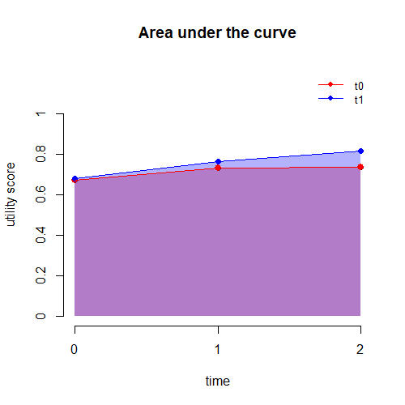

![]()
#load and pre-process the simulated dataset
library(readstata13)
#wide format
data_wide<-read.dta13("ex_data.dta")
data_wide$trt <- as.numeric(data_wide$arm)
data_wide$subjects<-rep(1:length(data_wide$arm))
data_wide <- data_wide[data_wide$arm %in% c("Placebo","Mirtazapine"),]
data_wide$trt <- ifelse(data_wide$trt == 1, 0, 1)
data_wide$id <- rep(1:nrow(data_wide))
data_wide$eq5d_1 <- data_wide$eq5d0
data_wide$eq5d_2 <- data_wide$eq5d13
data_wide$eq5d_3 <- data_wide$eq5d39
#long format
library(reshape)
data_long.eq5d<-reshape(data_wide, varying = c("eq5d_1","eq5d_2","eq5d_3"),
direction = "long",idvar = "id",sep = "_")
data_long.eq5d$time_u <- data_long.eq5d$time
data_long.eq5d<-data_long.eq5d[,c("id","trt","time_u","eq5d","eq5d0","qaly")]Baseline adjustment in trial based CEA
Quarto
R
Academia
health economics

Recently I have come across something I found a little odd when performing a statistical analysis of trial-based CEA data and I would like to share here my experience in the hope that anybody may be able to read it (and correct me if I am wrong). It is something related to the implementation of baseline adjustment for utility score data via regression approach.
To give an idea of the context of the analysis I quickly use some simulated data as an example of a dataset that could be object for this type of analysis. To make things simple, I simulated individual-level utility score data which are measured at baseline (\(u_0\)), 6 (\(u_1\)) and 12 (\(u_12\)) months follow up for two competing intervention groups, say a control (t=0) and an intervention (t=1). Again, to make things super easy I simulated these assuming a multivariate normal distribution with constant variance and no time correlation. Although this is not realistic it only serves the purpose to illustrate the issue I am facing. So let’s simulate the data.
Next, I previously computed individual-level QALYs (\(e_i\)) in each group by aggregating the utilities over the duration of the analysis, i.e. 1 year, using the AUC formula (see post thumbnail):
\[ e_i = \sum_{j=1}^{J}\frac{u_{ij-1} + u_{j}}{2} \times \delta, \]
where the subscript \(i\) and \(j\) denote the individual and time indices, while \(\delta\) is the portion of time covered between each successive pair of measurements. Since these measures are assumed to be collected at 6 months intervals, then in our case \(\delta=0.5\). At this point I have all the data I need to perform a regression analysis and try to estimate the mean QALYs in each group, adjusting for baseline values. The simplest way to do this is to fit a linear regression model at the level of the QALY variable and then include treatment to obtain estimates of unadjusted mean QALYs. If I also add \(u_{i0}\) as a covariate into the model, then I obtain adjusted mean estimates. The model is:
\[ e_i = \boldsymbol \beta \boldsymbol X_i + \varepsilon_i, \]
where \(\boldsymbol \beta\) is the vector of regression parameters, while \(\boldsymbol X_i\) is the matrix of predictors in the model (including an intercept, trt and \(u_{i0}\)).
#perform the analysis
library(emmeans)
library(nlme)
library(lme4)
#linear regression for QALYs (focus on complete cases for simplicity)
data_wide$trtf <- factor(data_wide$trt)
data_wide.cc<-data_wide[!is.na(data_wide$qaly),]
ols.cc.wide.qalys<-lm(qaly ~ trtf + eq5d0,data = data_wide.cc)
ci_ols.cc_qalys.means<-emmeans(ols.cc.wide.qalys,~trtf+ eq5d0)
print(ci_ols.cc_qalys.means) trtf eq5d0 emmean SE df lower.CL upper.CL
0 0.718 0.553 0.0152 103 0.523 0.583
1 0.718 0.582 0.0164 103 0.549 0.614
Confidence level used: 0.95 So far so good right? well now the problem pops up. It is generally known that, when some missing utility data occur, then it is more efficient (in the sense of using more information) to fit the model at the longitudinal level, i.e. at the level of the utility scores rather than at the QALYs level. In this was information from partially-observed cases will be used in the model when deriving the estimates for the mean utilities at each time, which can then be combined via the AUC formula to obtain the final QALY mean estimates. Here for simplicity we fit this longitudinal model even without any missingness. Although there is not much literature about this type of approach, let’s say that we want to fit a linear mixed-effects model to our data and then combine the model parameter estimates to derive the final estimates of interest. The model can be specified by including treatment, time, their first order interaction, and baseline values to derive the adjusted mean estimates.
\[ u_{ij} = \boldsymbol \beta \boldsymbol X_i + \omega_i + \varepsilon_{ij}, \]
where \(\boldsymbol \beta\) is the vector of fixed effects, while \(\boldsymbol X_i\) is the matrix of predictors in the model. This includes: an intercept; trt; \(u_{i0}\) and time, which is often expressed as a dummy-coded variable (with reference time \(j=0\)), and the interaction between trt and time. Finally, \(\omega_i\) is the random effects term.
#perform the analysis
data_long_cc <- data_long.eq5d[!is.na(data_long.eq5d$qaly),]
data_long_cc$trtf <- factor(data_long_cc$trt)
data_long_cc$timef_u <- factor(data_long_cc$time_u)
#mixed model for utilities (focus on complete cases for simplicity)
cgm3_u_ml.cc<-lme(eq5d ~ timef_u * trtf + eq5d0, random = ~ 1 | id, data=data_long_cc, method = "ML",na.action = na.omit)
#derive mean utilities
em3_u_ml.cc.eq5d<-emmeans(cgm3_u_ml.cc,~timef_u * trtf)
#derive mean QALYs as linear combination of mean utilities
cgm3_u_ml.cc.qalys <- contrast(em3_u_ml.cc.eq5d,list(mue1 = c(13/104,13/104 + 26/104,26/104,0,0,0), mue2=c(0,0,0,13/104,13/104 + 26/104,26/104)))
ci.cgm3_u_ml.cc.qalys <- confint(cgm3_u_ml.cc.qalys)
print(ci.cgm3_u_ml.cc.qalys) contrast estimate SE df lower.CL upper.CL
mue1 0.555 0.0126 103 0.530 0.580
mue2 0.580 0.0136 103 0.553 0.607
Degrees-of-freedom method: containment
Confidence level used: 0.95 Do you see the issue? the derived mean QALYs for both groups do not exactly match those obtained from the linear regression fitted to the QALYs despite the fact that the data used are the same, i.e. complete cases. This is a bit odd. However, what happens when I run the adjusted analysis including the interaction between time and baseline utilities alongside the main effects of \(u_{i0}\) ?
\[ u_{ij} = \boldsymbol \beta \boldsymbol X_i + \omega_i + \varepsilon_{ij}, \]
where \(\boldsymbol \beta\) is the vector of fixed effects, while \(\boldsymbol X_i\) is the matrix of predictors in the model. This includes: an intercept; trt; \(u_{i0}\) and time, which is often expressed as a dummy-coded variable (with reference time \(j=0\)), the interaction between trt and time, and also the interaction between time and \(u_{i0}\). Finally, \(\omega_i\) is the random effects term.
cgm3_u_ml.cc2 <- lme(eq5d ~ timef_u * trtf + timef_u*eq5d0, random = ~ 1 | id, data=data_long_cc, method = "ML",na.action = na.omit)
#derive mean utilities
em3_u_ml.cc.eq5d2 <- emmeans(cgm3_u_ml.cc2,~timef_u * trtf + timef_u*eq5d0)
#derive mean QALYs as linear combination of mean utilities
cgm3_u_ml.cc.qalys2 <- contrast(em3_u_ml.cc.eq5d2,list(mue1 = c(13/104,13/104 + 26/104,26/104,0,0,0), mue2=c(0,0,0,13/104,13/104 + 26/104,26/104)))
ci.cgm3_u_ml.cc.qalys2<-confint(cgm3_u_ml.cc.qalys2)
print(ci.cgm3_u_ml.cc.qalys2) contrast estimate SE df lower.CL upper.CL
mue1 0.553 0.0125 103 0.528 0.578
mue2 0.582 0.0135 103 0.555 0.608
Degrees-of-freedom method: containment
Confidence level used: 0.95 Ta da! the estimates now perfectly coincide. It turns out that when fitting this longitudinal model for the utility, it is important that an interaction between time and baseline utilities is included in the model to match the adjusted estimates that would be obtained via standard linear regressions fitted at the QALY level.
I am not totally convinced of why this is the case but perhaps it has something to do with the fact that baseline utilities are used as outcome and covariate at the same time in both types of models ? I need to study this in more detail.